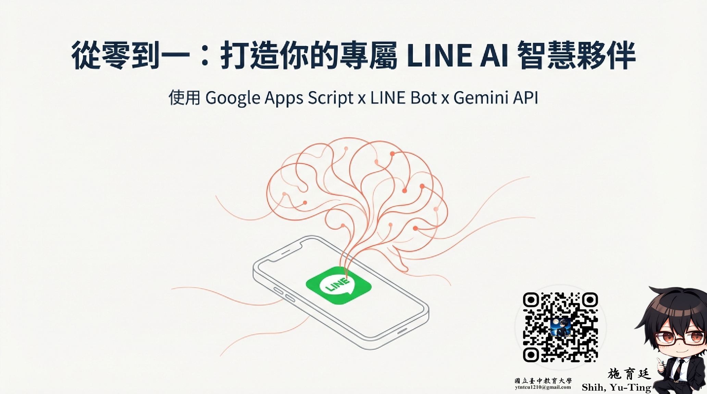
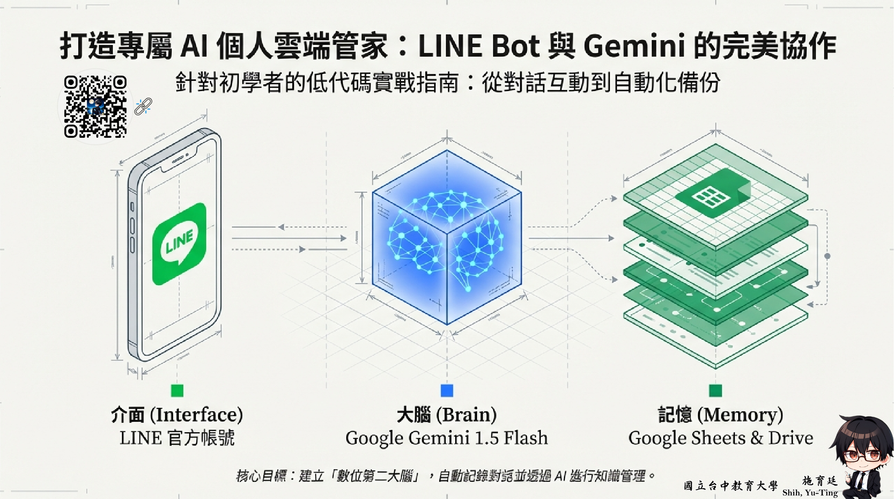

Learning goals
- Understand the differences among chatbots, AI agents, and general-purpose assistants.
- Identify service boundaries, memory, data sources, and fallback paths.
- Propose an interactive service prototype.
Key ideas
Agent-like systems matter because they coordinate tasks, not just answers. That makes service scope, permissions, and exception handling essential design concerns.
Without those boundaries, AI services easily break down in real teaching, support, or administrative settings.
Visual cases

This cover helps explain that an AI service can start from a familiar conversational entry point rather than a standalone system.

This architecture visual makes it easier to explain interface, model, memory, and automation as parts of one agent service.
Activities
Activity 1: Service scenario design
Choose a school or workplace setting and define users, needs, and service flow.
Activity 2: Exception handling
Plan what happens when AI answers incorrectly, cannot retrieve needed information, or encounters sensitive requests.
Task
Create a service concept describing user needs, data sources, interaction logic, and human support nodes.
Further viewing
This unit works well with channel content on chatbots, LINE Bot design, interactive service logic, and agent-style workflows, helping learners place service entry points, data sources, and responsibility boundaries in one design frame.